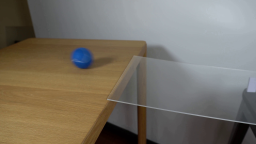

尚无可播放结果
failed
0001 ↗
0 保存候选 · 2011 输出 tokens
CODING AGENTS AS PIXEL WORLD MODELS
点击样本查看视频、逐轮候选和实际工具记录。
0 保存候选 · 2011 输出 tokens
0 保存候选 · 3343 输出 tokens
0 保存候选 · 4029 输出 tokens
0 保存候选 · 15950 输出 tokens
0 保存候选 · 9493 输出 tokens
0 保存候选 · 833 输出 tokens
0 保存候选 · 253 输出 tokens
0 保存候选 · 840 输出 tokens
0 保存候选 · 437 输出 tokens
0 保存候选 · 6618 输出 tokens
0 保存候选 · 1059 输出 tokens
0 保存候选 · 9051 输出 tokens
0 保存候选 · 857 输出 tokens
0 保存候选 · 928 输出 tokens
0 保存候选 · 9317 输出 tokens
0 保存候选 · 23748 输出 tokens
0 保存候选 · 631 输出 tokens
0 保存候选 · 5266 输出 tokens
0 保存候选 · 855 输出 tokens
0 保存候选 · 880 输出 tokens
0 保存候选 · 668 输出 tokens
0 保存候选 · 3811 输出 tokens
0 保存候选 · 13149 输出 tokens
0 保存候选 · 619 输出 tokens
0 保存候选 · 625 输出 tokens
0 保存候选 · 858 输出 tokens

1 保存候选 · 18656 输出 tokens
0 保存候选 · 16391 输出 tokens
0 保存候选 · 705 输出 tokens
0 保存候选 · 846 输出 tokens
0 保存候选 · 3648 输出 tokens
0 保存候选 · 613 输出 tokens
0 保存候选 · 1358 输出 tokens
0 保存候选 · 13814 输出 tokens
0 保存候选 · 1912 输出 tokens
0 保存候选 · 668 输出 tokens
0 保存候选 · 574 输出 tokens
0 保存候选 · 546 输出 tokens
0 保存候选 · 6023 输出 tokens
0 保存候选 · 18592 输出 tokens
0 保存候选 · 2652 输出 tokens
0 保存候选 · 817 输出 tokens
0 保存候选 · 1048 输出 tokens
0 保存候选 · 618 输出 tokens
0 保存候选 · 1007 输出 tokens
0 保存候选 · 5598 输出 tokens
0 保存候选 · 9255 输出 tokens
0 保存候选 · 2677 输出 tokens
0 保存候选 · 789 输出 tokens
0 保存候选 · 355 输出 tokens
0 保存候选 · 1492 输出 tokens
0 保存候选 · 1269 输出 tokens
0 保存候选 · 885 输出 tokens
0 保存候选 · 674 输出 tokens
0 保存候选 · 18527 输出 tokens
0 保存候选 · 286 输出 tokens
0 保存候选 · 731 输出 tokens
0 保存候选 · — 输出 tokens
0 保存候选 · 14805 输出 tokens
0 保存候选 · 629 输出 tokens

1 保存候选 · 2010 输出 tokens

1 保存候选 · 3903 输出 tokens

1 保存候选 · 3462 输出 tokens
0 保存候选 · 6823 输出 tokens
0 保存候选 · 776 输出 tokens
0 保存候选 · 19440 输出 tokens
0 保存候选 · 256 输出 tokens
0 保存候选 · 592 输出 tokens
0 保存候选 · 7024 输出 tokens
0 保存候选 · 1216 输出 tokens
0 保存候选 · 1314 输出 tokens
0 保存候选 · 282 输出 tokens
0 保存候选 · 3438 输出 tokens
0 保存候选 · 16281 输出 tokens
0 保存候选 · 2427 输出 tokens
0 保存候选 · 9557 输出 tokens
0 保存候选 · 285 输出 tokens
0 保存候选 · 221 输出 tokens
0 保存候选 · 1753 输出 tokens
0 保存候选 · 594 输出 tokens
0 保存候选 · 1024 输出 tokens
0 保存候选 · 13336 输出 tokens
0 保存候选 · 15737 输出 tokens
0 保存候选 · 11606 输出 tokens
0 保存候选 · 697 输出 tokens
0 保存候选 · 8786 输出 tokens
0 保存候选 · 7047 输出 tokens
0 保存候选 · 4863 输出 tokens
0 保存候选 · 4868 输出 tokens
0 保存候选 · 15336 输出 tokens
0 保存候选 · 9335 输出 tokens
0 保存候选 · 1739 输出 tokens
0 保存候选 · 4608 输出 tokens
0 保存候选 · 337 输出 tokens
0 保存候选 · 7910 输出 tokens
0 保存候选 · 3363 输出 tokens
0 保存候选 · 1225 输出 tokens
0 保存候选 · 9696 输出 tokens
0 保存候选 · 5335 输出 tokens
0 保存候选 · 888 输出 tokens
0 保存候选 · 5247 输出 tokens
0 保存候选 · 2995 输出 tokens
0 保存候选 · 72 输出 tokens
0 保存候选 · — 输出 tokens
0 保存候选 · 162 输出 tokens
0 保存候选 · — 输出 tokens
0 保存候选 · 234 输出 tokens
0 保存候选 · 2540 输出 tokens
0 保存候选 · — 输出 tokens
0 保存候选 · — 输出 tokens
0 保存候选 · 2974 输出 tokens
0 保存候选 · 522 输出 tokens
0 保存候选 · 17292 输出 tokens
0 保存候选 · 1264 输出 tokens
0 保存候选 · 1125 输出 tokens
0 保存候选 · 3956 输出 tokens
0 保存候选 · 291 输出 tokens
0 保存候选 · 7617 输出 tokens
0 保存候选 · 270 输出 tokens
0 保存候选 · 10409 输出 tokens
0 保存候选 · 14087 输出 tokens
0 保存候选 · 3559 输出 tokens
0 保存候选 · 792 输出 tokens
0 保存候选 · 10340 输出 tokens
0 保存候选 · 1238 输出 tokens
0 保存候选 · 606 输出 tokens
0 保存候选 · 7744 输出 tokens
0 保存候选 · 14057 输出 tokens
0 保存候选 · 5084 输出 tokens
0 保存候选 · 190 输出 tokens
0 保存候选 · 271 输出 tokens
0 保存候选 · 61 输出 tokens
0 保存候选 · 2997 输出 tokens
0 保存候选 · 469 输出 tokens
0 保存候选 · — 输出 tokens
0 保存候选 · 812 输出 tokens
0 保存候选 · — 输出 tokens
0 保存候选 · 234 输出 tokens
0 保存候选 · 5063 输出 tokens
0 保存候选 · 661 输出 tokens
0 保存候选 · 5948 输出 tokens
0 保存候选 · 3405 输出 tokens
0 保存候选 · 1601 输出 tokens
0 保存候选 · 1848 输出 tokens
0 保存候选 · — 输出 tokens
0 保存候选 · 2628 输出 tokens
0 保存候选 · 184 输出 tokens
0 保存候选 · 1265 输出 tokens
0 保存候选 · 845 输出 tokens
0 保存候选 · 2267 输出 tokens
0 保存候选 · 556 输出 tokens
0 保存候选 · 358 输出 tokens
0 保存候选 · 209 输出 tokens
0 保存候选 · 179 输出 tokens
0 保存候选 · 55 输出 tokens
0 保存候选 · 1083 输出 tokens
0 保存候选 · — 输出 tokens
0 保存候选 · 1491 输出 tokens
0 保存候选 · 189 输出 tokens
0 保存候选 · 248 输出 tokens
0 保存候选 · — 输出 tokens
0 保存候选 · 831 输出 tokens
0 保存候选 · 2873 输出 tokens
0 保存候选 · 183 输出 tokens
0 保存候选 · — 输出 tokens
0 保存候选 · 112 输出 tokens
0 保存候选 · 194 输出 tokens
0 保存候选 · 68 输出 tokens
0 保存候选 · 946 输出 tokens
0 保存候选 · 58 输出 tokens
0 保存候选 · 2155 输出 tokens
0 保存候选 · 989 输出 tokens
0 保存候选 · 4573 输出 tokens
0 保存候选 · 175 输出 tokens
0 保存候选 · — 输出 tokens
0 保存候选 · 2632 输出 tokens
0 保存候选 · 1225 输出 tokens
0 保存候选 · 65 输出 tokens
0 保存候选 · — 输出 tokens
0 保存候选 · 7033 输出 tokens
0 保存候选 · 117 输出 tokens
0 保存候选 · — 输出 tokens
0 保存候选 · 2067 输出 tokens
0 保存候选 · 2299 输出 tokens
0 保存候选 · 377 输出 tokens
0 保存候选 · 400 输出 tokens
0 保存候选 · 178 输出 tokens
0 保存候选 · 2048 输出 tokens
0 保存候选 · — 输出 tokens
0 保存候选 · 8088 输出 tokens
0 保存候选 · 385 输出 tokens
0 保存候选 · 193 输出 tokens
0 保存候选 · 449 输出 tokens
0 保存候选 · — 输出 tokens
0 保存候选 · 3553 输出 tokens
0 保存候选 · 191 输出 tokens
0 保存候选 · 68 输出 tokens
0 保存候选 · 1085 输出 tokens